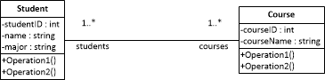
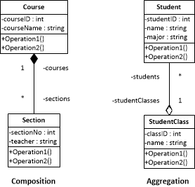

Associations are used to display the relationship between two classes. For example, Students take Courses. To show an association in a UML diagram, you draw a solid line with the multiplicity written on each end. Multiplicity shows how many objects of a class associate with how many objects of another class. A table for multiplicity can be found in Table 1. Below you can see how associations and multiplicity is drawn. In the example, it basically says one Student takes one to many Courses and one Course is taken by one to many Students.
The name on each end of the association, “students” and “courses” represent the role of the association end. The format of the role is the same as attributes and operations, camelCase. Another example of roles can be seen in this association: A Teacher writes a Book, in which the Teacher’s role could be “author”, and the role of the book could be “textbook”.
| Indicator | Meaning |
|
0..1 |
Zero or One |
|
1 |
One only |
|
0..* |
Zero or more |
|
* |
Zero or more |
|
1..* |
One or more |
|
3 |
Three Only |
|
0..5 |
Zero to Five |
|
5..15 |
Five to Fifteen |
Navigability can be represented by arrows. When an association that is only navigable to one side, which can be called unidirectional, you use a one sided arrow that points toward the flow of navigation. When an association is navigable to both sides, which is called bidirectional, you draw a double sided arrow. No arrows, like the example above, means the navigability is not specified.
Aggregation and composition are “whole-part” relationships. Composition relationships mean a part cannot exist without the whole. Aggregation on the other hand can have a part that can exist without the whole. An example of composition and aggregation can be seen below:
Composition is shown with a closed diamond pointing toward the “whole” class, while aggregation does the same but the diamond is open. In this example, a Section cannot exist without a Course for it to belong to, whereas a Student could exist without belonging to a StudentClass.
Aggregation cannot have a circular relationship, meaning that classes cannot be an aggregation of itself. Classes can have more than one aggregation for example, a Student can be in a StudentClass and possibly a StudentClub. Oppositely, a class can only be in one composition. Also, in a composition the lifespan of the “parts” depend on the “whole”, so if the “whole” is deleted, then all objects in the “parts” classes must be deleted too.
As a last note, to figure out if a class is a composition or aggregation of another class, just think “can this class exist if the other class is deleted?”. If it the item can’t exist then it is a composition relationship, and if it can then it’s a aggregation. Also, make sure that before you even contemplate whether to choose composition or aggregation, that one class is used to make up the other, for example Student doesn’t make up the Teacher class, but Student does make up StudentClass.